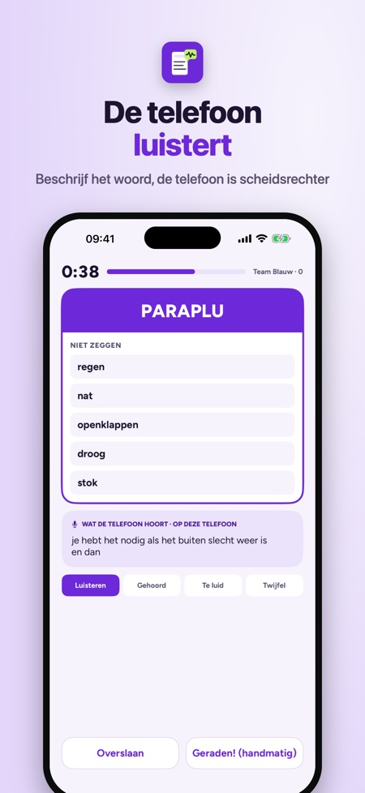
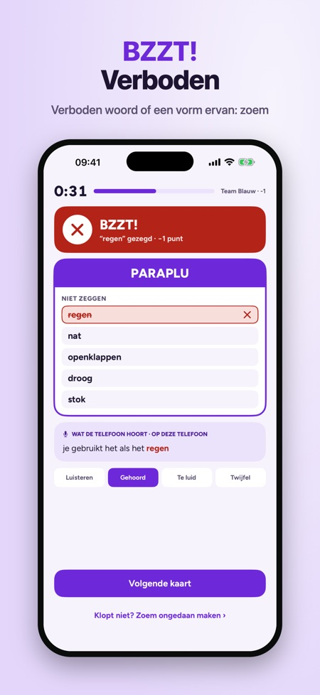
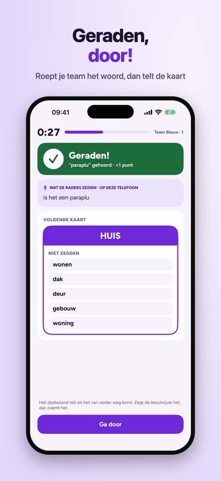

Zoemwoord is het woorden-raadspel waarbij je telefoon de scheidsrechter is. Zeg je een verboden woord, of een vorm ervan, dan zoemt Zoemwoord meteen.



Wie beschrijft houdt de telefoon vast en praat. Zegt hij een verboden woord, dan zoemt de telefoon; roept iemand uit het team het goede woord, dan telt de kaart vanzelf.
Met twee tot zes teams. Zonder aankoop speel je met twee teams.
Nee. Zoemwoord luistert alleen tijdens een ronde en herkent woorden op je telefoon; er wordt geen geluid of tekst opgeslagen of verstuurd.
De stapel Basis met 150 kaarten, twee teams en automatisch zoemen.
Een eenmalige aankoop: alle stapels, eigen kaarten maken en delen, tot zes teams en de historie van je spelavonden. Geen abonnement, geen reclame.
Ja, met Zoemwoord Plus maak je eigen kaarten met jullie grapjes en stuur je de stapel naar vrienden.
Ja, zonder microfoon speel je met de zoemknop.
Zoemwoord is het woorden-raadspel waarbij je telefoon de scheidsrechter is. Wie beschrijft, houdt de telefoon vast en praat. Zegt hij een verboden woord, of een vorm ervan, dan zoemt Zoemwoord meteen. Roept iemand uit je team het goede woord, dan telt de kaart vanzelf.
De stapel Basis met 150 kaarten, twee teams en automatisch zoemen werken zonder aankoop. Zoemwoord Plus is een eenmalige aankoop: alle stapels, eigen kaarten maken en delen, tot zes teams en de historie van je spelavonden. Geen abonnement, geen reclame.
Zoemwoord luistert alleen tijdens een ronde en herkent woorden op je telefoon. Er wordt geen geluid of tekst opgeslagen of verstuurd. Herkenning kan zich vergissen; elke zoem kun je terugdraaien. Zonder microfoon speel je met de zoemknop.